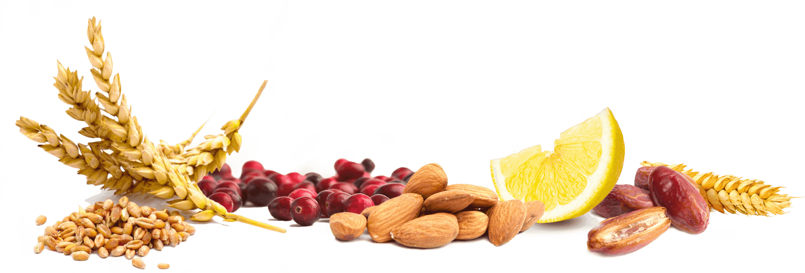

Wat heb je nodig? 300 gr kipfilet 2 grote uien 2-3 tenen knoflook paprikapoeder 2-3 tl ketjap sambal naar smaak 1 groot blikje tomatenpuree suiker naar smaak 1 blik halve perziken op sap zout/ peper bindmiddel Rijst (basmati) 